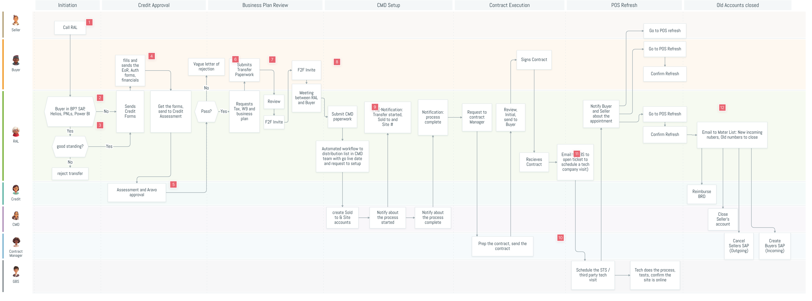
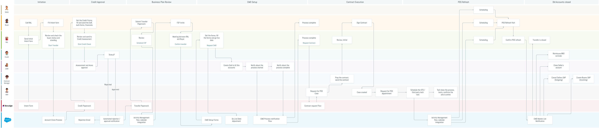
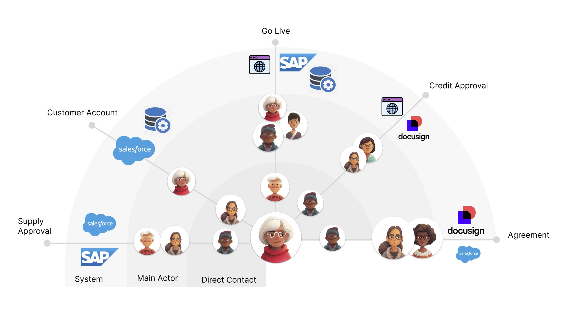
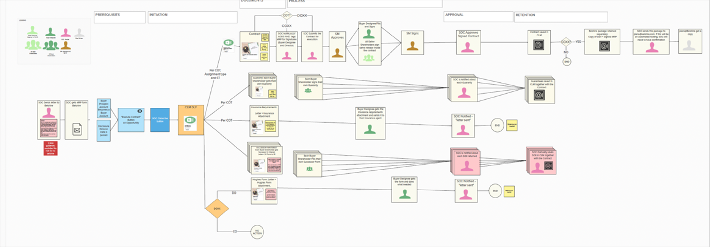
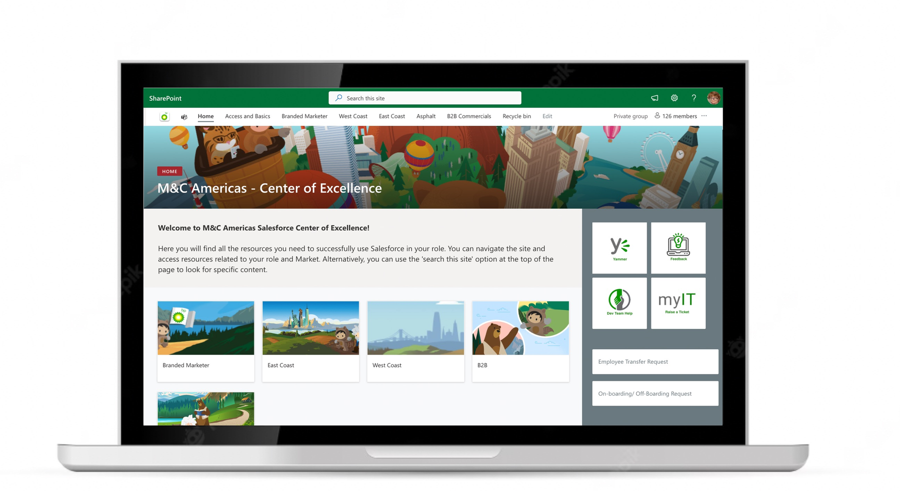
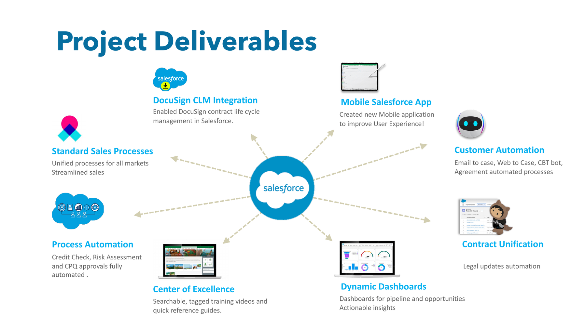

BP's US fuel sales across four markets, moved from offline work into one connected system on Salesforce, DocuSign and the BP portal.
$2.1B in sales run four different ways, mostly offline, with duplicate data entry, manual work across several systems, no shared standards, no knowledge sharing between teams and no view of sales in progress.
As UX and service designer, I redesigned the sales processes for four US markets end to end across Salesforce, DocuSign and the BP portal. As DocuSign delivery lead, I created a contract system built from modular blocks that scales to any number of agreement types.
The program delivered one system: data is entered once and stored in Salesforce, all four markets share processes and contract templates, dashboards show sales in progress, and a Center of Excellence keeps training and reference in one place.
Each market kept its own contracts on personal hard drives and ran its own steps. Customer data went into 5 systems, decisions drew on 50 sources, and 100+ hours a month went to searching, filing and waiting.

Each market sold its own way, and people across markets didn't know each other.
Ran weeks of workshops with champions from each market, mapped as-is and to-be processes, and agreed the direction with stakeholders.
Aligning stakeholders who had never worked together.

The to-be processes now had to work on three legacy platforms.

Every sales process crossed Salesforce, DocuSign and the BP portal.
Reviewed every process diagram with the architects and leads of the Salesforce, Automation and DocuSign teams and designed how users move between platforms. I owned and presented the deliverables and shaped the team and stakeholders around a design-first approach.
Large legacy platforms, so the modern experience had to fit what they could do. Not a greenfield design.
Under the processes sat about 60,000 pages of contracts.
Each market had its own contracts, documents and steps.
Processed all contracts into one modular template structure for four markets. Designed the Salesforce-to-DocuSign flows: a button in Salesforce assembles the right package for the market, loads the signers and runs up to five signing stages, tracked in Salesforce and covered by reports, with nothing to upload. Led the DocuSign team through daily stand-ups.
A mostly junior team, so I trained the developers alongside delivery.

Once the first market was live and tested, people had to learn the new way of working.

Sales managers and operators had to switch to new processes full of edge cases.
Recorded a video and a cheat sheet for every flow. Came up with the Center of Excellence, built the first process as the example and led 3 business analysts on the rest. Wrote test plans for 3 testers in SharePoint, with results in Jira. Ran demos for the full 50–70 person team that doubled as bug and edge-case reviews, followed by regression.
Testers worked at different times with different skills, so I ran testing asynchronously with plans that fit each of them.
All four markets now work in Salesforce and DocuSign, with shared processes and contract templates.
